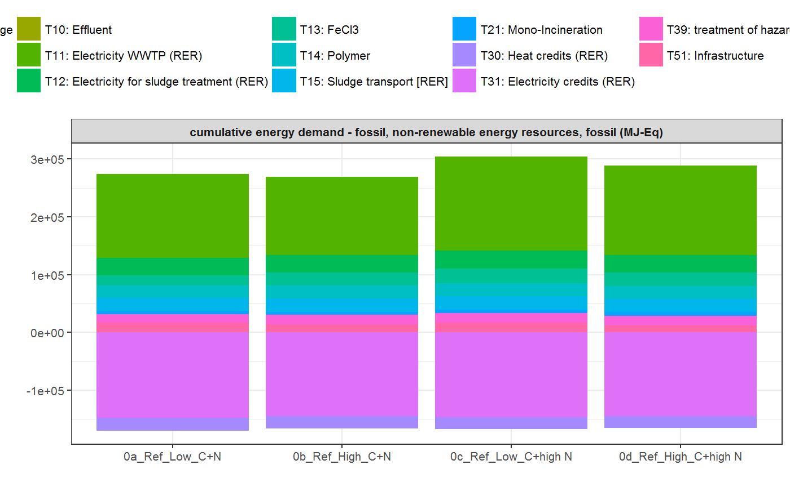
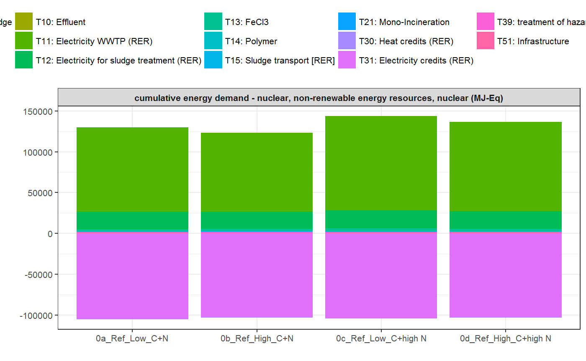
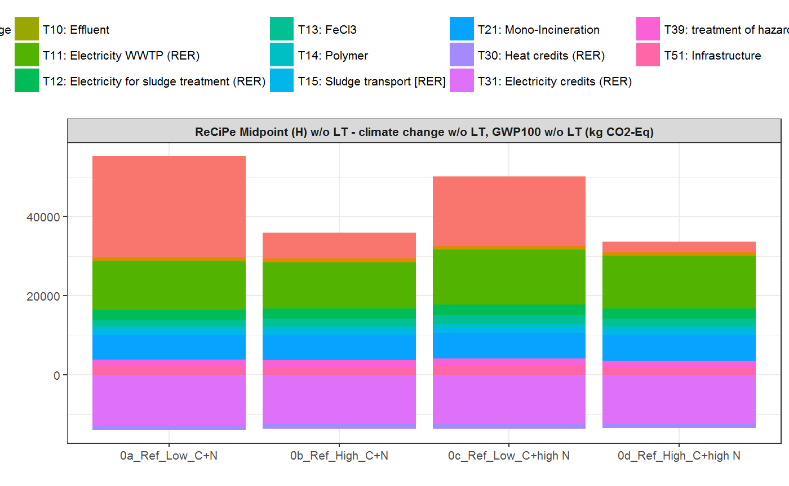
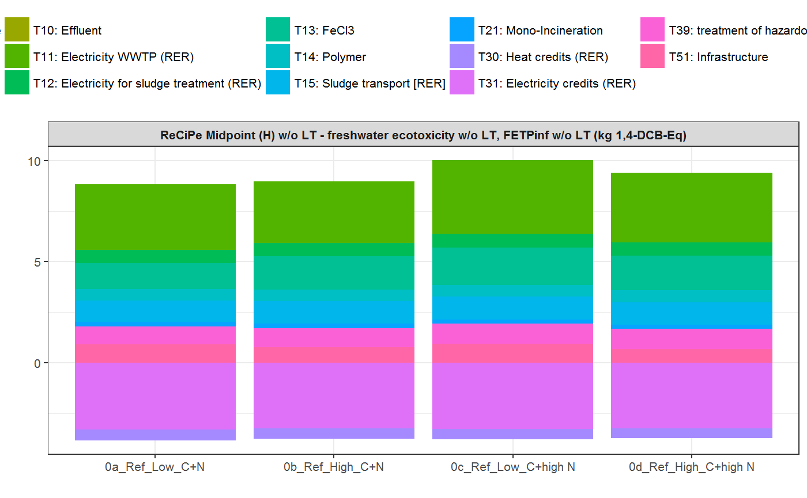
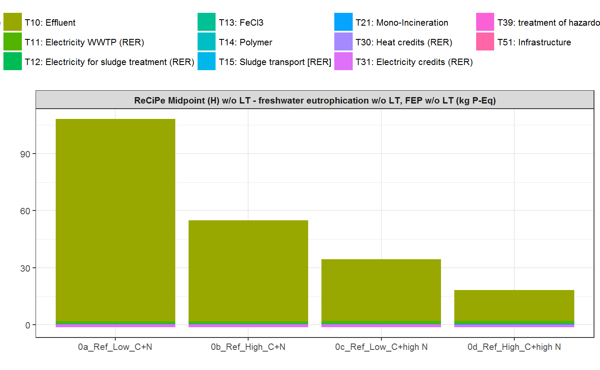
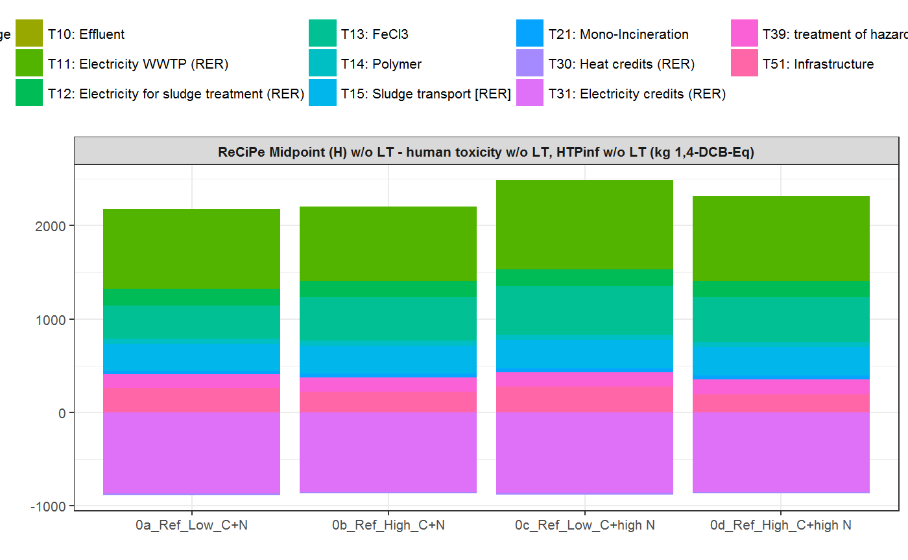
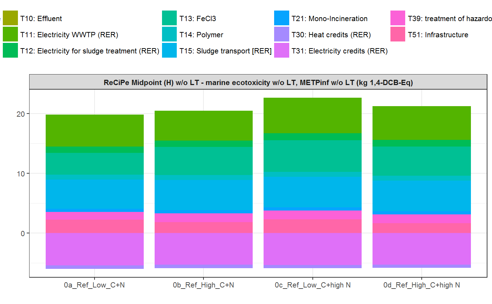
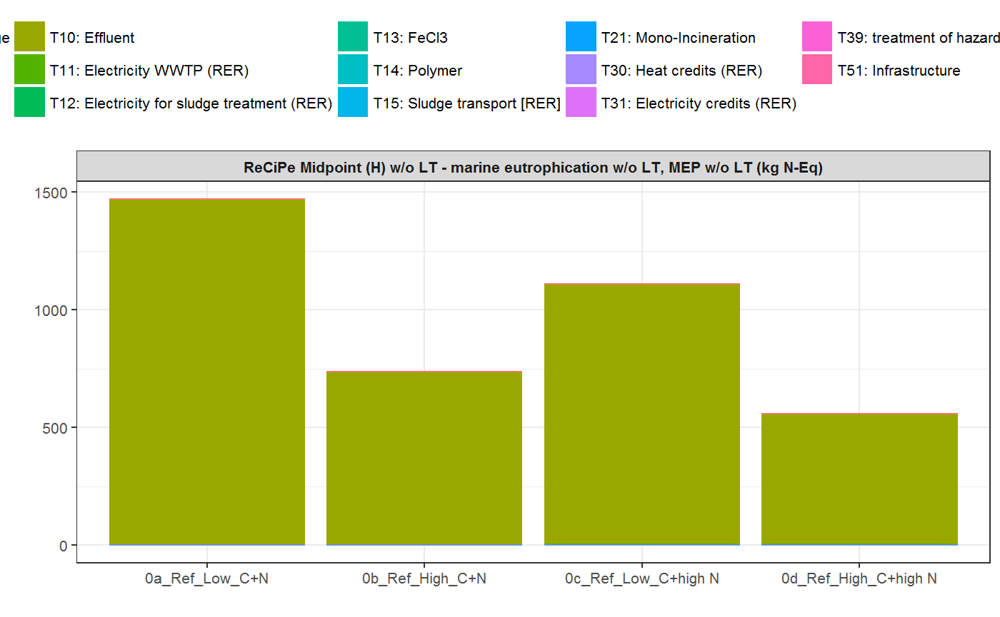
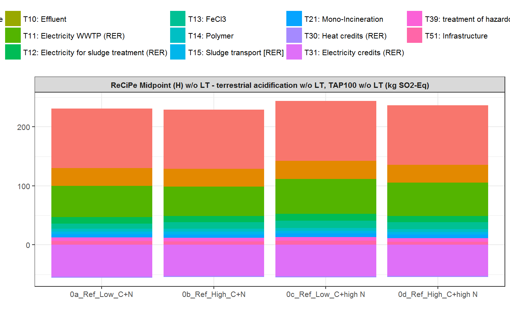

The example .csv files (in German format, i.e. decimals are indicated with , and ; is used as field separator) are the Umberto model output files, which were stored in one zip file Beispiel_Auswertung.zip and attached to the R package kwb.umberto as shown below:
Using the function kwb.umberto::import_rawdata() and specifying the parameter csv_dir = temp) imports the model results from all four .csv files that are located in the folder temp.
rawdata <- kwb.umberto::import_rawdata(csv_dir = temp)
#> [1] "Importing csv file 'C:\\Users\\mrustl.KWB\\AppData\\Local\\Temp\\RtmpuK7Uvj/Beispiel_Auswertung/Ref_High_C+high N.csv'"
#> Using ',' as decimal and '.' as grouping mark. Use read_delim() for more control.
#> [1] "Importing csv file 'C:\\Users\\mrustl.KWB\\AppData\\Local\\Temp\\RtmpuK7Uvj/Beispiel_Auswertung/Ref_High_C+N.csv'"
#> Using ',' as decimal and '.' as grouping mark. Use read_delim() for more control.
#> [1] "Importing csv file 'C:\\Users\\mrustl.KWB\\AppData\\Local\\Temp\\RtmpuK7Uvj/Beispiel_Auswertung/Ref_Low_C+high N.csv'"
#> Using ',' as decimal and '.' as grouping mark. Use read_delim() for more control.
#> [1] "Importing csv file 'C:\\Users\\mrustl.KWB\\AppData\\Local\\Temp\\RtmpuK7Uvj/Beispiel_Auswertung/Ref_Low_C+N.csv'"
#> Using ',' as decimal and '.' as grouping mark. Use read_delim() for more control.To access the structure of the imported data one can run the following command:
head(rawdata)
#> # A tibble: 6 x 12
#> project model net timestamp product lci_method phase process
#> <chr> <chr> <chr> <chr> <chr> <chr> <chr> <chr>
#> 1 POWERST~ 0d_Ref~ Main ~ 11.10.201~ VOL [A1~ ReCiPe Midpo~ Other T03: Ac~
#> 2 POWERST~ 0d_Ref~ Main ~ 11.10.201~ VOL [A1~ ReCiPe Midpo~ Other T06: CH~
#> 3 POWERST~ 0d_Ref~ Main ~ 11.10.201~ VOL [A1~ ReCiPe Midpo~ Other T06: CH~
#> 4 POWERST~ 0d_Ref~ Main ~ 11.10.201~ VOL [A1~ ReCiPe Midpo~ Other T07: Ce~
#> 5 POWERST~ 0d_Ref~ Main ~ 11.10.201~ VOL [A1~ ReCiPe Midpo~ Other T11: El~
#> 6 POWERST~ 0d_Ref~ Main ~ 11.10.201~ VOL [A1~ ReCiPe Midpo~ Other T11: El~
#> # ... with 4 more variables: material_type <chr>, material <chr>,
#> # quantity <dbl>, unit <chr>Once the data is imported into R, it can be aggregated as shown in the subsequent subchapters.
data_grouped <- kwb.umberto::group_data(rawdata)
head(data_grouped)
#> # A tibble: 6 x 5
#> # Groups: lci_method, model, process [6]
#> lci_method model process unit quantity_sum
#> <chr> <chr> <chr> <chr> <dbl>
#> 1 cumulative energy demand -~ 0a_Ref_~ T11: Electricit~ MJ-Eq 145350.
#> 2 cumulative energy demand -~ 0a_Ref_~ T12: Electricit~ MJ-Eq 30204.
#> 3 cumulative energy demand -~ 0a_Ref_~ T13: FeCl3 MJ-Eq 17734.
#> 4 cumulative energy demand -~ 0a_Ref_~ T14: Polymer MJ-Eq 21443.
#> 5 cumulative energy demand -~ 0a_Ref_~ T15: Sludge tra~ MJ-Eq 22137.
#> 6 cumulative energy demand -~ 0a_Ref_~ T21: Mono-Incin~ MJ-Eq 5687.data_pivot <- kwb.umberto::pivot_data(data_grouped)
head(data_pivot)
#> # A tibble: 6 x 6
#> # Groups: lci_method, process [6]
#> lci_method process `0a_Ref_Low_C+N` `0b_Ref_High_C+~ `0c_Ref_Low_C+h~
#> <chr> <chr> <dbl> <dbl> <dbl>
#> 1 cumulative ~ T11: El~ 145350. 135761. 162218.
#> 2 cumulative ~ T12: El~ 30204. 29674. 30950.
#> 3 cumulative ~ T13: Fe~ 17734. 23087. 25930.
#> 4 cumulative ~ T14: Po~ 21443. 22178. 21871.
#> 5 cumulative ~ T15: Sl~ 22137. 22794. 23126.
#> 6 cumulative ~ T21: Mo~ 5687. 5829. 5906.
#> # ... with 1 more variable: `0d_Ref_High_C+high N` <dbl>data_pivot_list <- kwb.umberto::create_pivot_list(data_pivot)
#> Joining, by = c("lci_method", "process")
#> Warning: package 'bindrcpp' was built under R version 3.4.4
#> Joining, by = c("lci_method", "process")
#> Joining, by = c("lci_method", "process")
#> Joining, by = c("lci_method", "process")
#> Joining, by = c("lci_method", "process")
#> Joining, by = c("lci_method", "process")
#> Joining, by = c("lci_method", "process")
#> Joining, by = c("lci_method", "process")
#> Joining, by = c("lci_method", "process")
head(data_pivot)
#> # A tibble: 6 x 6
#> # Groups: lci_method, process [6]
#> lci_method process `0a_Ref_Low_C+N` `0b_Ref_High_C+~ `0c_Ref_Low_C+h~
#> <chr> <chr> <dbl> <dbl> <dbl>
#> 1 cumulative ~ T11: El~ 145350. 135761. 162218.
#> 2 cumulative ~ T12: El~ 30204. 29674. 30950.
#> 3 cumulative ~ T13: Fe~ 17734. 23087. 25930.
#> 4 cumulative ~ T14: Po~ 21443. 22178. 21871.
#> 5 cumulative ~ T15: Sl~ 22137. 22794. 23126.
#> 6 cumulative ~ T21: Mo~ 5687. 5829. 5906.
#> # ... with 1 more variable: `0d_Ref_High_C+high N` <dbl>Finally the resulting data can be exported to an EXCEL spreatsheet. For each lci_method available in the imported dataset a sheet named lci_method_1 to lci_method_9 will be created, as there are 9 distinct lci_method available for this example data set:
In addition a simple visualisation of the imported and grouped data can be performed by calling the function kwb.umberto::plot_results() as shown below:
rawdata <- kwb.umberto::import_rawdata(csv_dir = temp)
#> [1] "Importing csv file 'C:\\Users\\mrustl.KWB\\AppData\\Local\\Temp\\RtmpuK7Uvj/Beispiel_Auswertung/Ref_High_C+high N.csv'"
#> Using ',' as decimal and '.' as grouping mark. Use read_delim() for more control.
#> [1] "Importing csv file 'C:\\Users\\mrustl.KWB\\AppData\\Local\\Temp\\RtmpuK7Uvj/Beispiel_Auswertung/Ref_High_C+N.csv'"
#> Using ',' as decimal and '.' as grouping mark. Use read_delim() for more control.
#> [1] "Importing csv file 'C:\\Users\\mrustl.KWB\\AppData\\Local\\Temp\\RtmpuK7Uvj/Beispiel_Auswertung/Ref_Low_C+high N.csv'"
#> Using ',' as decimal and '.' as grouping mark. Use read_delim() for more control.
#> [1] "Importing csv file 'C:\\Users\\mrustl.KWB\\AppData\\Local\\Temp\\RtmpuK7Uvj/Beispiel_Auswertung/Ref_Low_C+N.csv'"
#> Using ',' as decimal and '.' as grouping mark. Use read_delim() for more control.
data_grouped <- kwb.umberto::group_data(rawdata)
kwb.umberto::plot_results(grouped_data = data_grouped)